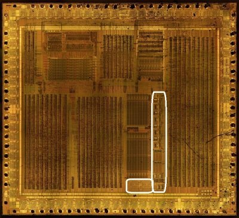
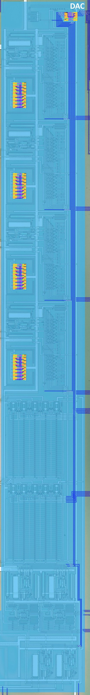
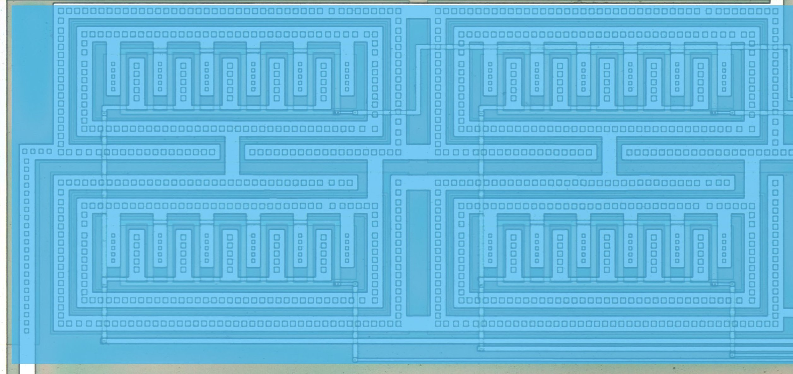
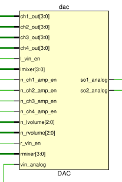

Sound Output DAC



Signals

| Signal Name | Direction | From / Where To | Description |
|---|---|---|---|
| [3:0] ch1_out | Input | From APU | Channel 1 digital amplitude |
| [3:0] ch2_out | Input | From APU | Channel 2 digital amplitude |
| [3:0] ch3_out | Input | From APU | Channel 3 digital amplitude |
| [3:0] ch4_out | Input | From APU | Channel 4 digital amplitude |
| l_vin_en | Input | From APU | Left channel VIN (external audio) enable |
| [3:0] lmixer | Input | From APU | Left mixer: channel routing to the left output (NR51) |
| n_ch1_amp_en | Input | From APU | Channel 1 amplifier enable (active low) |
| n_ch2_amp_en | Input | From APU | Channel 2 amplifier enable (active low) |
| n_ch3_amp_en | Input | From APU | Channel 3 amplifier enable (active low) |
| n_ch4_amp_en | Input | From APU | Channel 4 amplifier enable (active low) |
| [2:0] n_lvolume | Input | From APU | Left volume (active low, NR50) |
| [2:0] n_rvolume | Input | From APU | Right volume (active low, NR50) |
| r_vin_en | Input | From APU | Right channel VIN (external audio) enable |
| [3:0] rmixer | Input | From APU | Right mixer: channel routing to the right output (NR51) |
| vin_analog | Input | From VIN Pad | External analog audio input |
| so1_analog | Output | To SO1 Pad | Right analog audio output |
| so2_analog | Output | To SO2 Pad | Left analog audio output |
Verified behaviour (issue #398, APU suite)
The digital interface semantics were measured on the real APU netlist:
-
rmixer[3:0]= NR51 bits 3:0 (routing to SO1/right),lmixer[3:0]= NR51 bits 7:4 (SO2/left). -
n_rvolume/n_lvolume= active-low NR50 volume fields;r_vin_en/l_vin_en= NR50 bits 7/3. -
the per-channel amplifier enables (
n_chN_amp_en) follow the channel running state / NR52 power; the digital amplitudeschN_out[3:0]carry the duty/square level, the NR32-scaled wave sample (ch3) or the noise level (ch4).